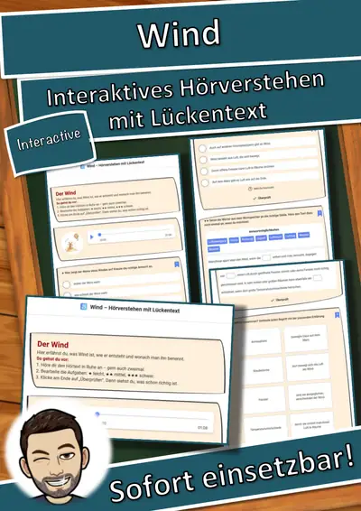
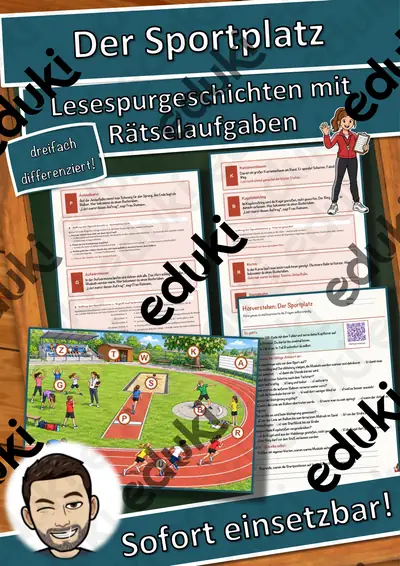
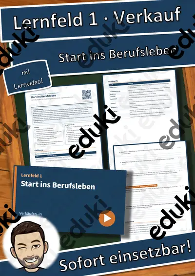

Lesespur: Sprinten und Starten: schnell wie der Wind – Lesespurgeschichte mit Rätseln (Klasse 3)
Sprinten und Starten – schnell wie der Wind – Lesespurgeschichte Sport (Klasse 3/4)Begib dich mit deiner Klasse auf eine flotte Lesespur über den Sportplatz! Merve und Paul erleben einen Sprint-Vormittag – und Paul ist sicher, dass er der Schnellste ist. An der Hallentür wird eingelaufen, auf der Hüpfstrecke trainieren alle mit Übungen aus dem Lauf-ABC schnelle Füße. An der Startlinie lernen sie den Hochstart mit den Startkommandos, auf dem Klatschfeld starten sie aus lustigen Ausgangslagen auf ein Signal. Auf der Sprintgerade geht es um Armschwung und Blick, in der Staffelzone um die Stabübergabe, am Zeitnehmertisch um die Stoppuhr – und am Siegerpodest gratulieren sich alle. Ihr Stoff-Hase Sausi ist immer dabei. Am Ende jedes Abschnitts verrät ein Hinweis den nächsten Ort auf dem Plan – nur wer genau liest, findet den Weg und sammelt alle geheimen Buchstaben zum Lösungswort.
Die perfekte Lesespur für den SPORTUNTERRICHT der 3. und 4. Klasse – ideal als Einstieg in den Bereich Laufen, vor den Bundesjugendspielen oder für Sporttheorie bei Regenwetter: Sie verbindet sinnentnehmendes Lesen mit Lauftechnik, Startformen, Staffel und Fair Play. Das Material ist SOFORT EINSETZBAR und in DREI DIFFERENZIERUNGSSTUFEN (leicht ★ / mittel ★★ / schwer ★★★) angelegt.WICHTIG: Das komplette Material ist sowohl in FARBE als auch in SCHWARZ-WEISS enthalten – ideal zum Sparen von Druckkosten.DAS IST ENTHALTEN
- Lesespurgeschichte in 3 Niveaus (leicht, mittel, schwer)
- farbiger Sportplatzplan als Suchkarte
- Hörverstehen mit QR-Code zur MP3 (selbstständiges Hören mit Kopfhörern)
- vier Aufträge auf dem Weg: ein Quiz, eine Rechenaufgabe, eine Zuordnung und ein Steckbrief
- Rätselseite (Wörter-Suchsel + Fragen)
- Ausmalbild zum Thema (Sprinten auf der Laufbahn)
- ausführliches Lösungsblatt für die Lehrkraft
- alles zusätzlich als komplette Schwarz-Weiß-VarianteSO GEHT DIE LESESPURDie Kinder lesen ab START, finden im Text den nächsten Ort, suchen ihn auf dem Plan und lesen bei dieser Station weiter. An jeder richtigen Station gibt es einen Buchstaben. Eingebaute Sackgassen (Weitsprunggrube, Geräteraum, Hausmeisterhaus, Fahnenmast) sind keine Stationen und dienen der Selbstkontrolle. Am Ende werden die gesammelten Buchstaben umgestellt und ergeben ein geheimes Lösungswort. (Die Lösungen sind selbstverständlich nur im Lösungsblatt für die Lehrkraft enthalten.)INHALTLICHER SCHWERPUNKTAufwärmen vor dem Sprint, Lauf-ABC, Hochstart und Startkommandos, Fehlstart, Starts aus verschiedenen Ausgangslagen auf Signal, Sprinttechnik (Fußballen, Armschwung, Blick, durchs Ziel laufen), Staffellauf mit Stabübergabe im Wechselraum, Zeitmessung und faire Siegerehrung.ABGEDECKTER LEHRPLAN (Klasse 3/4, Sport)
- Sport (LehrplanPLUS Bayern) – Jahrgangsstufe 3/4 „Laufen, Springen, Werfen“: schnell laufen, auf Signale starten, Staffelformen erproben, Leistungen messen und fair miteinander umgehen.
- Deutsch – Lesen: Texten gezielt Informationen entnehmen; Zuhören: einem Sachhörtext folgen (Hörverstehen mit MP3).
- Mathematik – Addition, Multiplikation und Subtraktion im Zahlenraum bis 100.
- Fächerübergreifend / Kompetenzen: soziales Lernen (Fairness, Teamarbeit in der Staffel), genaues Lesen und Prüfen, kreatives Gestalten (Ausmalbild).
Geeignet für Freiarbeit, Stationenlernen, Vertretungsstunden, Wochenplan, Projekttage, Sporttheorie bei Regenwetter und Distanzunterricht. Klassenstufe 3/4.
Ähnliche Materialien

Wind – Hörverstehen mit Lückentext (interaktiv)

Wind Lückentext mit Wortspeicher Hörverstehen und Suchsel

Lesespur: Der Sportplatz – Lesespurgeschichte mit Rätseln (Klasse 6)

Lesespur: Fitness und Krafttraining: richtig trainieren – Lesespurgeschichte mit Rätseln (Klasse 9)

Lernfeld 1 Verkäufer/-in: Start ins Berufsleben – Einführung, Übungen, Lösungen + Lernvideo

Lesespur: Wolken, Wind und Wetter malen – Lesespurgeschichte mit Rätseln (Klasse 1)

Lesespur: Eishockey: schnell, hart und fair – Lesespurgeschichte mit Rätseln (Klasse 7)